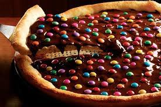
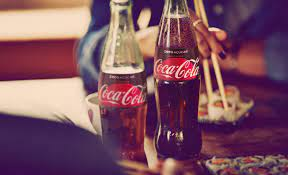
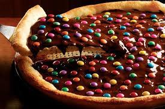
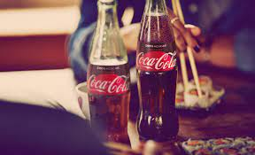

Sobre o FastPizza
Em meio ao movimentado centro da cidade, erguia-se uma pequena joia gastronômica conhecida como
FastPizza. Com seu letreiro luminoso e um aroma irresistível pairando no ar, era um convite instantâneo
aos amantes de pizza e àqueles que buscavam uma refeição rápida e deliciosa.
Com uma decoração moderna e acolhedora, a FastPizza oferecia um ambiente descontraído onde amigos,
famílias e colegas de trabalho podiam se reunir para saborear as mais incríveis criações de pizza. As
paredes adornadas com fotos de paisagens italianas e os assentos confortáveis convidavam os clientes a
relaxarem enquanto aguardavam suas refeições.
O cardápio da FastPizza era um verdadeiro festim para os paladares mais exigentes. Desde as clássicas
pizzas de queijo e pepperoni até as mais exóticas combinações de ingredientes, como frango ao curry e
abacaxi com bacon, havia algo para todos os gostos. E para aqueles que buscavam opções mais leves,
saladas frescas e wraps saudáveis estavam sempre disponíveis.
Mas o verdadeiro diferencial da FastPizza era a sua agilidade. Equipada com fornos de última geração e
uma equipe treinada para a máxima eficiência, a pizzaria garantia que seus clientes nunca tivessem que
esperar muito tempo pelo seu pedido. Era como se o sabor viajasse em uma velocidade própria, diretamente
do forno para o paladar dos clientes.
Além disso, a FastPizza também oferecia um serviço de entrega rápido e confiável. Com uma frota de
scooters personalizadas e entregadores dedicados, eles asseguravam que suas pizzas chegassem quentinhas
e frescas até a porta dos clientes, onde quer que estivessem na cidade.
Mas mais do que apenas uma pizzaria, a FastPizza era parte integrante da comunidade local. Patrocinando
eventos beneficentes, apoiando equipes esportivas locais e participando ativamente de iniciativas de
sustentabilidade, eles se esforçavam para retribuir àqueles que os apoiavam.
Assim, a FastPizza não era apenas uma pizzaria, mas sim um símbolo de qualidade, conveniência e
hospitalidade. Era o lugar onde o sabor se encontrava com a velocidade, e onde cada mordida era uma
experiência inesquecível. Venha se deliciar na FastPizza - onde a boa comida nunca espera!
Nossos produtos
A cada ano a pizzaria FastPizza reiventa e cria novos produtos e sabores cada vez mais inrresistiveis
 



pizza salgada pizza doce bebidas